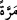
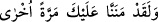
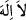
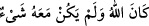
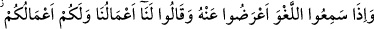
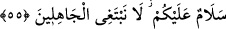

kötülüğü iyilikle savarlar, kendilerine verdiğimiz rızıktan da Allah rızâsı için
harcarlar.
“İşte onlara,” yâni özellikleri anlatılan bu kimselere hem kendi kitaplarına ve hem de
Kur’ân’a îman üzere “sabretmelerinden” ve iki şerîatla da amel etmelerinden “ötürü,”
âhirette “mükâfatları iki defa verilecektir.”
“ (defa-kerre)”nin mânâsı, Tâhâ sûresinde
“
(Andolsun biz sana bir defa daha lütufta bulunmuştuk)”
(Tâhâ, 20/37) âyetinin tefsirinde geçmişti.
et-Te’vîlâtü’n-Necmiyye’de der ki: Hevâlarına muhâlefete, şerîatın emir ve
yasaklarına muvâfakata sabrettikleri için mükâfatları iki defa verilecektir.
Hadiste buyrulmuştur ki: Şu üç sınıf kimsenin ecri iki defa verilir. Biri; câriye sâhibi
bir kimsedir ki onu güzel bir edeple yetiştirip terbiye etti. Ve sonra da onu evlendirdi.
Bu kimseye ecri iki defa verilir. Diğeri; hem Allah’ın hakkını ve hem de efendisinin
hakkını tas tamam yerine getiren mü’min bir köledir. Üçüncüsü; önceki kitaba îman
ettikten sonra Kur’ân’a da îmân eden kimsedir. Ona da ecri ve mükâfatı iki kez
verilir.[117] Nitekim Keşfü’l-esrâr’da böyle kaydedilmiştir.
“Bunlar kötülüğü iyilikle savarlar,” Mâsiyeti, itâatla uzaklaştırırlar; kötü sözü iyi
sözle giderirler.
et-Te’vîlâtü’n-Necmiyye’de der ki: Sâlih amellerden iyilik yapmak suretiyle
kötülüğün zulmetini ortadan kaldırırlar. Kötülüğün zulmeti, şeriata muhâlif
davranışlarda bulunmaktır.
Nitekim Peygamber (s.a.) buyurmuştur ki: Kötülüğün peşinden iyilik yap ki, onu
silsin.”[118] Allah Teâlâ da şöyle buyurur: “Çünkü İyilikler, kötülükleri (günahları)
giderir, yok eder” (Hûd, 11/114). Bu, mü’minlerin avamı içindir. Havassınki ise “Lâ
ilâhe illallah” zikr-i hasenesi ile kalp aynasından dünya sevgisi ve şehvetlerinden
oluşan pasın kirini (kötülüğünü) silmeleridir. Seçkinlerin seçkinleri (ehassü’l-havâss)
için ise “
” nefyinin güzelliği ile mevcudâtın varlık (vücûd) şirkinin kötülüğünü,
kalbin onunla alâkasını kesmek ve basîret gözünü mâsivâya bakmaktan alıkoymak ve
yalnızca Allah’ın varlığını isbat ederek, “
” diyerek uzaklaştırırlar. Nitekim sadece
Allah vardı ve O’nunla birlikte hiçbir şey yoktu (
).
“Kendilerine verdiğimiz rızıktan da Allah rızâsı için” hayır yolunda infak etmek
üzere “harcarlar.”
Burada, hakîki varlığı elde etmek için mecâzî varlığı infak etmeye işâret vardır.